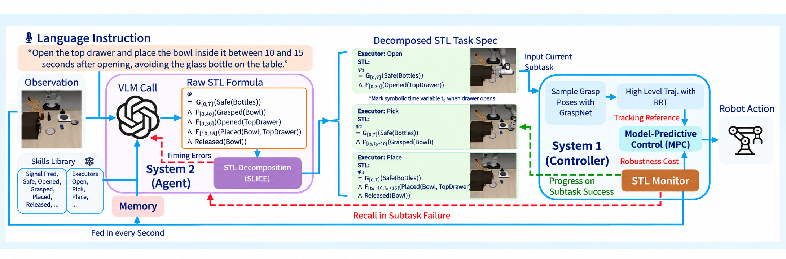

Natural-language robot instructions often specify more than a coarse task goal: they may impose spatial, temporal, and logical requirements that must remain satisfied throughout execution. We present STeP, a specification-based agentic framework that uses Signal Temporal Logic (STL) as an explicit interface between high-level language reasoning and low-level robot execution. Rather than encoding such requirements implicitly in a learned policy, STeP formalizes them as task specifications that can be decomposed across multi-stage manipulation, enforced during execution, monitored online, and used as structured feedback for replanning.
We evaluate STeP on standard LIBERO and LIBERO-PRO, and introduce LIBERO-Constrained, a new benchmark for manipulation tasks with spatial, temporal, and logical requirements, together with real-world tabletop experiments. On LIBERO-PRO, STeP retains 54%–89% success across five of six evaluated perturbation settings, substantially outperforming VLA and code-as-policy baselines under distribution shift. On LIBERO-Constrained, STeP achieves 80% safe success across 49 task–constraint instances; on real-world tasks, it improves safe success over a specification-free model-based baseline across all four task categories, with gains of up to 45 percentage points. These results support explicit formal specifications as a practical interface between foundation-model reasoning and reliable robot execution.
Step through the pipeline, or click any part of the figure.

LIBERO-Constrained adds precise requirements to LIBERO's manipulation tasks. It has 121 tasks: 106 with an extra requirement and 15 plain LIBERO instructions in the same scenes as a control. Keep-out tasks place a real object, such as a milk carton, wine bottle, ketchup bottle or juice carton, beside the object or on its route. Every requirement is written as one STL formula and scored by its robustness on the logged trajectory, so no run is judged by hand.
Below are STeP's own rollouts, one per task, from start state 0. Each video shows the scene on the left. On the right are the instruction, the active subtask with its STL formula, and the live robustness ρ; a value below zero means a rule is being broken.
| Category | Tasks | Task success | Safe success |
|---|
Safe success means the task was completed and every rule held for the whole run. Click a row to see its videos.
@article{torshizi2026step,
title = {STeP: Signal Temporal Logic for Precise Specifications for
Action Generation with Vision Language Models},
author = {Torshizi, Kasra and Singh, Anukriti and Mathur, Sidharth and
Habib, Khuzema and Du, Leo and Tokekar, Pratap},
journal = {arXiv preprint arXiv:2607.18580},
year = {2026}
}